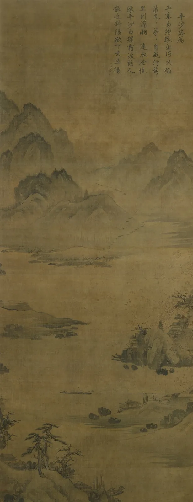

명도가 먼저다
휴대폰 사진에 흑백 필터를 씌워 본 적이 있을 것이다. 어떤 사진은 흑백이 되자 오히려 단단해지고, 어떤 사진은 회색 안개처럼 풀어져 무엇을 찍었는지조차 흐려진다. 색은 그대로 빠졌는데 왜 결과가 이렇게 다를까. 남은 것은 밝고 어두움, 곧 명도뿐이다. 이 장은 그 명도가 그림과 디자인의 뼈대라는 사실을 직접 확인한다. 색을 고르기 전에 명도를 먼저 정하라는 화가들의 오랜 요령이 왜 맞는지, 그리고 언제 깨도 되는지도 함께 본다.
- 명도(L*)가 색상·채도와 어떻게 다른 축인지, 순색마다 명도가 왜 제각각인지 설명한다.
- 글자와 그림이 읽히는 데 명도 차이가 색상 차이보다 먼저 일한다는 것을 시뮬레이터로 확인한다.
- 명도 단계표를 만들고, 물감을 같은 비율로 섞으면 명도가 고르게 변하지 않는 이유를 안다.
- 노탄(명도 덩어리)으로 작품과 포스터의 명도 구조를 읽고 직접 짠다.
- 수묵화의 농담이 명도만으로 거리와 깊이를 만드는 방식을 실제 작품에서 본다.
흑백으로 바꾸면 보이는 것
색을 말할 때 우리는 보통 "빨강", "초록"처럼 색의 종류부터 말한다. 그런데 색에는 세 가지 성질이 겹쳐 있다. 어떤 계열인가(색상(Hue)), 얼마나 선명한가(채도(Chroma), 7장), 그리고 얼마나 밝은가. 이 마지막 성질이 명도(Value, Lightness)다. 명도는 그 색을 같은 밝기의 회색으로 바꿨을 때 그 회색이 얼마나 밝은지로 생각하면 된다. 이 책은 명도를 CIELAB의 L*로 적는다. 0이 완전한 검정, 100이 흰색이다.
세 성질 중 흑백 사진에 살아남는 것은 명도 하나다. 그리고 명도는 색상을 따라 저절로 정해지지 않는다. 아래 그림은 화면이 낼 수 있는 가장 선명한 여덟 색(순색)을 명도 눈금 위에 놓은 것이다.
#ffff00)은 L* 97로 흰색 바로 옆에, 가장 선명한 파랑(#0000ff)은 L* 32로 짙은 회색 자리에 놓인다. 둘 다 "가장 선명한 색"이지만 흑백으로는 거의 반대편이다. 이 책의 모델로 계산한 값이다. 색상환에서 가까운 색이라도 명도는 멀 수 있고, 먼 색이라도 명도는 같을 수 있다.그러면 글자와 그림이 "읽힌다"는 것은 색상 차이와 명도 차이 중 어느 쪽에 더 달려 있을까. 아래에서 직접 비교한다. 오른쪽 판은 제목 글자색의 지도다. 가로로 가면 바탕과 색상이 멀어지고(0°는 같은 계열, 180°는 정반대 계열), 세로로 가면 바탕보다 밝아지거나 어두워진다. 손잡이를 끌어 글자색을 고르고, 왼쪽 견본에서 얼마나 잘 읽히는지 본다. 그다음 오른쪽 위 흑백 단추를 눌러 지도 전체를 명도만으로 다시 본다.
색상 차이와 명도 차이, 어느 쪽이 읽히게 하나
가로로 멀리 가도, 곧 색상이 정반대여도 명도가 같으면 글자는 잘 읽히지 않는다. 반대로 같은 계열의 색끼리도 명도만 충분히 다르면 또렷하다. 이것이 이 장의 제목이 말하는 바다. 형태와 글자를 드러내는 일은 대부분 명도가 하고, 색상은 그 위에 성격과 분위기를 얹는다. 명도가 같은 두 색이 맞닿은 상태를 등휘도(Equiluminance)라고 부른다. 등휘도의 경계는 흐릿하게 떨리거나 어른거려 보이기 쉽다.
왜 명도가 먼저인가
명도가 이렇게 큰 힘을 갖는 이유는 눈과 뇌가 정보를 나눠 처리하는 방식에 있다. 1장에서 본 것처럼 눈은 빛을 대략 "밝기", "빨강–초록", "노랑–파랑"의 세 신호로 바꾼다. 이 중 밝기 신호는 가장 세밀하다. 가는 선, 작은 글자, 물체의 가장자리처럼 촘촘한 무늬는 주로 밝기 신호로 전달되고, 두 색 신호는 훨씬 성긴 해상도로만 따라온다.
시각 과학자 캐슬린 멀런(Kathy T. Mullen)은 1985년 논문에서, 밝기만 다른 줄무늬와 색만 다른(밝기는 같은) 줄무늬를 놓고 사람이 얼마나 가는 무늬까지 알아보는지 쟀다. 색 줄무늬는 무늬가 촘촘해지면 밝기 줄무늬보다 훨씬 일찍 보이지 않게 되었다. 신경생물학자 마거릿 리빙스턴(Margaret Livingstone)은 『시각과 미술』(Vision and Art: The Biology of Seeing, 2002)에서 이런 연구들을 바탕으로, 형태·깊이·움직임을 읽는 처리 경로가 주로 명도 차이에 반응한다는 해석으로 많은 회화를 설명했다. 이 해석이 모든 작품에 들어맞는지는 미술사가와 과학자 사이에 논쟁이 있지만, "명도가 형태를 나른다"는 화가들의 경험칙과 잘 맞는다.
명도를 숫자로 적는 방법은 두 단계다. 먼저 화면 값(감마가 걸린 숫자)을 빛의 세기로 되돌려 사람의 눈이 느끼는 비중대로 더해 휘도(Luminance) Y를 구한다. 초록이 가장 큰 몫을, 파랑이 가장 작은 몫을 차지한다. 그다음 Y를 사람이 느끼는 밝기의 간격에 맞게 휘어 L*로 바꾼다.
이 책의 시뮬레이터 머리마다 붙은 흑백 단추가 바로 이 Y만 남긴다. 그래서 흑백으로 본 회색은 원래 색과 L*가 같다.
명도 단계표
화가들이 명도를 익히는 첫 연습은 명도 단계표(Value scale)다. 흰색에서 검정까지를 고른 간격의 칸으로 나눠 칠하는 것이다. 미국의 화가이자 교육자 앨버트 먼셀(Albert H. Munsell)은 20세기 초에 만든 색 체계에서 명도를 0(검정)부터 10(흰색)까지 눈으로 고른 간격의 단계로 나눴고, 이 열한 단계는 지금도 미술 수업의 기본 눈금으로 쓰인다. 먼셀 명도는 대략 L*의 10분의 1이다.
눈으로 고른 간격을 만들기는 생각보다 어렵다. 흰 물감에 검정을 조금씩 더하면 될 것 같지만, 아래 시뮬레이터로 해 보면 그렇지 않다. 검정을 같은 비율 간격(0%, 12.5%, 25%, …)으로 섞어 단계표를 만든 뒤, "명도를 같은 간격으로"로 바꿔 필요한 비율이 어떻게 달라지는지 본다. "물을 타는 먹·수채"로 바꾸면 흰 물감 대신 종이의 흰색을 쓰는 투명한 재료를 볼 수 있다.
명도 단계표 만들기: 같은 비율과 같은 명도
검정 물감은 빛을 흡수하는 힘이 워낙 세서, 아주 조금만 섞여도 흰 물감이 돌려보내던 빛을 크게 줄인다. 게다가 눈은 밝은 쪽의 작은 변화에 더 민감하다(앞의 L* 공식이 세제곱근으로 휘는 이유다). 두 효과가 겹쳐 "같은 양씩 더하기"는 밝은 쪽에서 성큼성큼, 어두운 쪽에서 찔끔찔끔 변하는 계단을 만든다. 그래서 단계표는 비율이 아니라 눈으로, 또는 명도 숫자로 맞춘다.
노탄: 명도를 덩어리로 보기
단계표가 명도의 "눈금"이라면, 그 눈금으로 화면 전체를 몇 개의 덩어리로 나눠 보는 일이 노탄(Notan, 濃淡)이다. 일본어로 "짙음과 옅음"을 뜻하는 말로, 미국의 미술 교육자 아서 웨슬리 다우(Arthur Wesley Dow)가 1899년 책 『구성』(Composition)에서 동아시아 그림과 판화의 명암 배치를 서양 미술 교육에 소개하며 이 말을 썼다. 노탄은 세부를 모두 지우고 화면을 두세 가지 명도의 모양으로만 본다. 그렇게 남은 큰 배치를 명도 구조(Value structure)라고 한다.
명도 구조를 말할 때 자주 쓰는 말이 하나 더 있다. 화면 전체가 밝은 쪽 단계에 몰려 있으면 하이 키(High key), 어두운 쪽에 몰려 있으면 로 키(Low key)라고 한다. 하이 키는 가볍고 공기 같은 인상을, 로 키는 무겁고 극적인 인상을 주기 쉽다. 명도 범위를 일부러 좁게 쓰는 것도 선택이다. 어둠의 화가로 불리는 렘브란트의 그림이 좋은 예다.

이제 작품을 노탄으로 바꿔 본다. 아래 시뮬레이터는 그림의 모든 점을 명도에 따라 몇 개의 단계로 나눠, 각 단계를 회색 하나로 칠한다. 아래 띠는 그림 전체의 명도 분포(히스토그램)이고, 띠 위의 손잡이가 단계를 나누는 경계다. 손잡이를 좌우로 끌어 경계를 옮긴다.
노탄: 작품을 2·3·5단계로
렘브란트의 그림을 2단계로 줄여도 무엇이 그려졌는지 알아볼 수 있다. 화가들이 "명도가 맞으면 색은 거의 아무것이나 된다"고 과장해서 말하는 것도 이 때문이다. 큰 명도 구조가 서 있으면 색은 그 위에서 자유롭게 움직일 수 있고, 반대로 명도 구조가 무너진 그림은 색을 아무리 고쳐도 흐릿하다. 다만 "같은 넓이"에서 본 것처럼, 단계를 기계적으로 고르게 나누는 것은 구조가 아니다. 구조는 어디를 밝게 남기고 어디를 어둠으로 묶을지를 정하는 일이다.
눈을 가늘게 뜨는 점검
화실에서 가장 흔히 보는 동작 중 하나가 그림 앞에서 눈을 가늘게 뜨는 것이다. 눈을 가늘게 뜨면 들어오는 빛이 줄고 초점이 흐려져, 작은 세부와 색의 미묘한 차이는 사라지고 큰 명도 덩어리만 남는다. 노탄을 머릿속에서 즉석으로 만드는 셈이다. 아래는 그 효과를 흉내 낸 것이다. 경계선을 좌우로 끌어 원본과 흐린 모습을 비교하고, 흐림 정도를 올려 본다.
눈을 가늘게 뜨면 남는 것
흐림 점검은 세부를 그리기 전, 그리고 다 그린 뒤에 두 번 하면 좋다. 세부를 그리기 전에는 큰 덩어리가 서 있는지, 다 그린 뒤에는 세부가 큰 덩어리를 깨뜨리지 않았는지 본다. 디자이너가 작업 화면을 한껏 축소해 엄지손톱만 하게 보거나, 몇 걸음 떨어져 모니터를 보는 것도 같은 점검이다.
수묵의 농담: 명도만으로 그린 그림
명도만으로 그림을 짓는 일을 가장 오래, 가장 깊이 다듬은 전통 중 하나가 동아시아의 수묵화다. 수묵화는 먹과 물, 그리고 종이나 비단의 바탕색만으로 그린다. 먹을 진하게 또는 묽게 쓰는 정도를 농담(濃淡, Ink tonality)이라고 하고, 앞 절의 노탄이라는 말도 같은 한자에서 왔다.
당나라의 장언원(張彥遠)은 9세기에 쓴 『역대명화기』(歷代名畫記)에서 먹을 잘 운용하면 다섯 가지 색이 다 갖추어진다는 뜻의 말을 남겼고, 이 생각은 뒤에 "먹에는 다섯 빛깔이 있다(墨分五色)"는 말로 널리 전해졌다. 다섯 가지를 무엇으로 꼽는지는 책과 시대마다 다르다. 흔히 짙은 쪽부터 초(焦)·농(濃)·중(重)·담(淡)·청(淸)으로 소개하지만, 마른 먹과 젖은 먹, 바탕의 흰색을 함께 넣어 "여섯 채색"으로 꼽는 설명도 있다. 이 분류는 측정값이 아니라 전통적인 설명이다. 다만 그 핵심, 곧 먹 하나로도 몇 단계의 명도를 계획해 쓰면 색이 하는 일을 상당 부분 대신할 수 있다는 생각은 이 장에서 본 원리와 정확히 같다.

이 관찰을 숫자로 확인한다. 아래 시뮬레이터는 그림을 가로 띠 여러 개로 나눠, 띠마다 가장 짙은 먹의 명도와 바탕(비단)의 명도를 오른쪽 그래프에 그린다. 그림 위의 띠를 위아래로 끌어 한 구간을 자세히 본다. "먹만 보기"를 켜면 누렇게 바랜 비단의 색을 빼고 먹의 농담만 흰 바탕 위에 남긴다.
가장 짙은 먹은 가까운 곳에
멀리 있는 것일수록 명도 대비가 줄고 바탕색에 가까워지는 현상은 실제 풍경에서도 일어난다. 공기 속의 물방울과 먼지가 빛을 흩뜨려, 먼 산과 눈 사이에 옅은 빛의 막이 끼기 때문이다. 서양 회화에서는 이것을 대기 원근(Aerial perspective)이라고 부르고, 동아시아 산수화는 이것을 먹의 농담과 여백으로 그렸다. 하나는 색으로, 하나는 먹으로 접근했지만 둘 다 결국 명도 대비의 크기로 거리를 만든다.
같은 명도의 함정: 포스터 고치기
이제 디자인으로 돌아온다. 가상의 동네 서점 "책방 E"의 가을 행사 포스터 첫 시안이다. 바탕은 서점의 로고 초록 후보, 제목은 가을다운 붉은 계열로 칠했다. 색상환에서 서로 멀리 떨어진 두 색이라 화면에서는 눈에 확 띈다. 그런데 오른쪽의 흑백 판을 보면 제목이 사라진다. 두 색의 명도가 같기 때문이다.
오른쪽 끝의 명도 막대에서 "제목"과 "바탕" 손잡이를 위아래로 끌어 두 색의 명도를 바꿔 본다. 색상과 채도는 그대로 두고 명도만 움직인다.
책방 E 가을 행사 포스터: 명도만 고치기
시안 1이 실패한 이유는 색을 "무슨 색"으로만 골랐기 때문이다. 초록의 반대편이니 붉은 계열을 쓰면 눈에 띌 것이라는 생각은 색상만 본 판단이다. 화면에서 이 포스터가 그럭저럭 읽혔던 것도, 등휘도의 경계가 떨리며 오히려 눈을 피곤하게 만드는 쪽에 가까웠다. 게다가 색 신호가 약하게 전달되는 사람, 곧 적록 색각이상이 있는 사람에게는 두 색이 거의 같은 색으로 보인다(13장). 흑백 점검은 이런 위험을 한 번에 걸러 내는 가장 값싼 방법이다.
명도 구조 설계하기
마지막 시뮬레이터는 이 장의 도구를 모아 그림 한 장의 명도 구조를 직접 짠다. 장면은 서윤이 그리려는 수채화 「창가의 책」이다. 창, 벽, 탁자, 쌓인 책, 책의 그림자, 찻잔, 여섯 부분을 밝음·중간·어둠 세 단계 중 하나로 정한다. 그림 속 부분을 누르면 단계가 차례로 바뀐다. 슬라이더는 세 단계의 명도 자체를 정한다. 각 부분의 색상과 채도는 그대로 두고, 명도만 그 단계의 값으로 맞춘다.
「창가의 책」 명도 구조 설계기
세 단계로 짠 구조가 서면, 그다음은 각 단계 안에서 색을 고르는 일이다. 중간 단계의 벽을 따뜻한 회색으로 할지 탁한 초록으로 할지는 명도 구조를 해치지 않는 한 자유롭다. 반대로 단계의 경계를 넘는 색, 예를 들어 어둠 단계의 책 하나를 아주 밝은 노랑으로 칠하면 구조 전체가 흔들린다. 색의 선명함이 구조에 어떤 영향을 주는지는 7장에서, 여러 대비를 한꺼번에 쓸 때의 문제는 8장에서 다룬다.
명도가 먼저라는 원칙에도 예외는 있다. 인상주의 화가들의 일부 그림, 앞에서 본 등휘도의 해돋이, 동아시아 채색화의 어떤 화면은 명도 차이를 일부러 줄이고 색상과 채도의 차이로 화면을 짠다. 그런 그림이 흐릿하지 않고 빛나 보인다면, 그것은 명도 구조를 몰라서가 아니라 알고서 내려놓았기 때문이다. 원칙을 먼저 익히는 이유는 언제 내려놓을지를 고르기 위해서다.
서윤의 작업 노트
흑백으로 바꾸자 제목이 사라졌다
10월 둘째 주, 서윤은 "책방 E" 가을 행사 포스터의 첫 시안을 들고 서점에 갔다. 바탕은 로고 초록 후보 #2f7d5b, 제목 "가을 책 산책"은 단풍을 떠올리며 고른 붉은 계열 #c14637이었다. 주인은 "색이 가을답네요" 하며 흑백 복사기로 동네 게시판용 안내문을 한 장 뽑았다. 종이에서 제목이 사라져 있었다.
이 책의 모델로 계산하면 두 색의 명도는 L* 47.0으로 같고, WCAG 대비는 1.00이다. 색 차이(ΔE2000)는 약 54로 아주 큰데도 그렇다. 서윤은 회사에서 버튼 색을 고를 때는 늘 대비를 쟀으면서 포스터에서는 "보색이니 눈에 띄겠지" 하고 넘겼다는 것을 깨달았다. 한도경은 복사본을 보더니 연필로 포스터를 엽서만 하게 다시 그렸다. 칠한 것은 회색 셋뿐이었다. "제목을 먼저 밝음으로 빼고, 바탕은 중간, 책 그림을 어둠으로 묶어. 색은 그다음이야."
서윤은 제목의 색상(붉은 계열)은 지키고 명도만 올려 살구빛 크림 #ffe2d7(L* 92, OKLCH 0.93 / 0.035 / 43°)로 바꿨다. 바탕과의 대비는 4.07이 되었다. 책 그림과 테두리는 짙은 초록 #22342a(L* 20)로 묶었다. 흑백 복사본에서도 제목이 먼저, 책 그림이 그다음으로 읽혔다. 같은 날 저녁, 서윤은 「창가의 책」의 명도 스케치를 세 장 그렸다. 밝은 창을 등진 역광, 어두운 방에 책만 빛나는 구도, 그리고 모두 중간인 구도. 셋째 장은 한눈에 흐렸다. 서윤은 첫째 장을 골랐다. 도경은 대신 수채화에서는 흰 물감이 아니라 종이 자체가 가장 밝은 단계라는 점을 짚었다. "창은 처음부터 칠하지 않고 남겨 둬야 해. 수묵화가 하늘을 비워 두는 것처럼." 서윤은 도경에게 휴대폰 카메라의 흑백 모드를 켜는 법을 알려 주었고, 도경은 그날부터 스케치를 찍어 흑백으로 확인하기 시작했다.
#ffe2d7 L*92
중간 · 바탕#2f7d5b L*47
어둠 · 책 그림#22342a L*20
시안 1의 제목(버림)#c14637 L*47
핵심 정리
- 색은 색상·채도·명도의 세 성질을 갖고, 흑백에는 명도만 남는다. 순색도 명도가 제각각이라 노랑(L* 97)과 파랑(L* 32)은 흑백으로 거의 반대편이다.
- 글자와 형태가 읽히는 데는 명도 차이가 먼저 일한다. 색상이 정반대여도 명도가 같으면(등휘도) 경계가 떨리고 흑백에서는 사라진다. WCAG 대비도 명도(휘도)만 본다.
- 명도 단계표는 비율이 아니라 눈이나 명도 숫자로 맞춘다. 흰 물감에 검정을 같은 비율로 더하면 밝은 쪽에서 급하게 어두워진다.
- 노탄은 화면을 두세 가지 명도 덩어리로 보는 방법이다. 명도 구조는 단계를 고르게 나누는 일이 아니라 어디를 밝게 남기고 어디를 어둠으로 묶을지 정하는 일이다.
- 눈을 가늘게 뜨거나 화면을 흐리게 하면 세부와 색은 사라지고 명도 구조만 남는다. 좋은 구조는 흐려도 읽힌다.
- 수묵화는 먹의 농담과 바탕만으로 공간을 만든다. 먼 것일수록 명도 대비를 줄이는 원리는 대기 원근과 같다. 먹의 다섯 단계 같은 분류는 전통적인 설명이다.
확인 퀴즈
1. 초록 바탕(#2f7d5b)에 붉은 제목(#c14637)을 올린 포스터를 흑백으로 복사했더니 제목이 사라졌다. 두 색의 색 차이 ΔE2000은 약 54로 크다. 가장 알맞은 설명은?
2. 렘브란트의 그림을 같은 명도 간격 3단계로 나눴더니 화면의 98%가 어둠 단계였고, 밝음 단계는 거의 없었다. 이런 명도 구성을 부르는 말은?
3. 흰 물감에 검정 물감을 0%, 12.5%, 25%, …, 100%로 같은 비율 간격씩 섞어 9칸 명도표를 만들었다. 결과로 가장 가능성 높은 것은?
4. 조선 시대 수묵 산수화에서 가까운 소나무는 짙은 먹으로, 먼 산은 옅은 먹으로 그렸고, 먼 산을 그린 가장 짙은 먹도 가까운 바위의 짙은 먹보다 옅다. 이 표현의 원리로 가장 알맞은 것은?